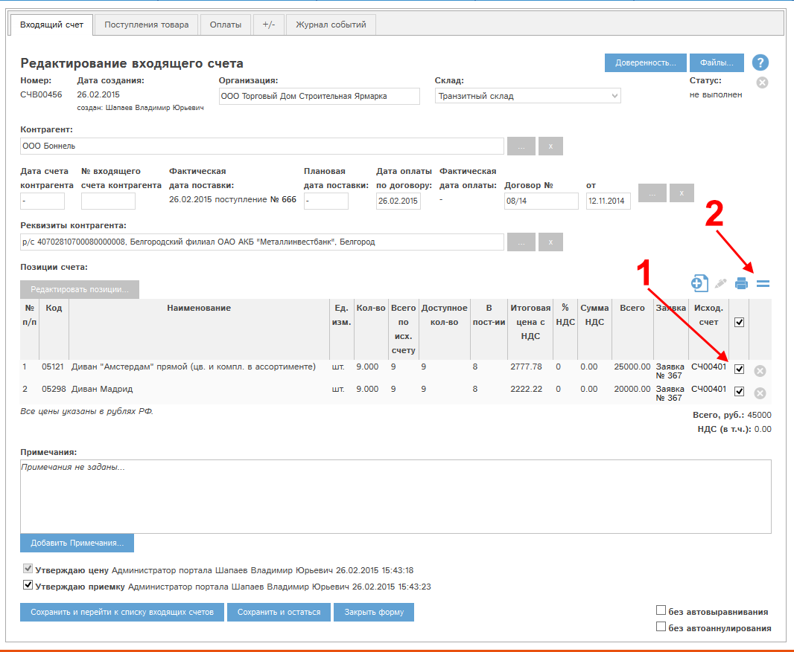
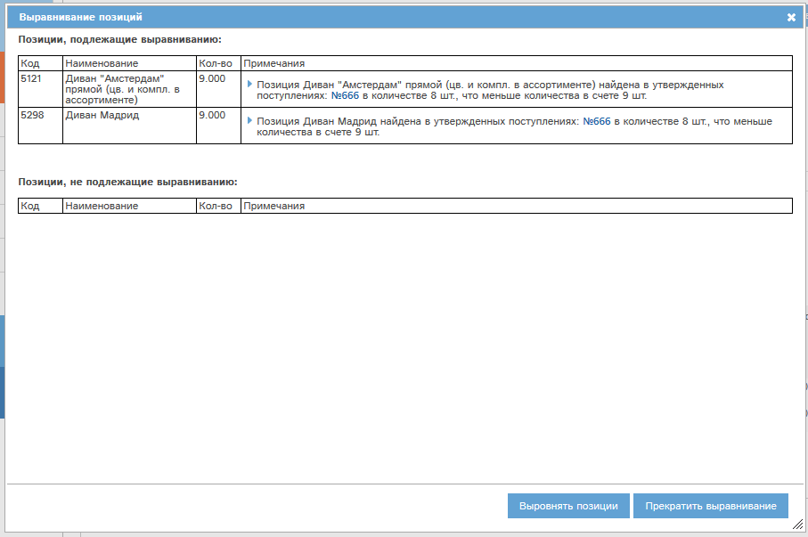

¬ыравнивание доступно дл€ позиций вход€щего счета с утвержденной ценой и приемкой.
¬ыравнивание проводитс€ по следующему алгоритму:
ƒл€ выравнивани€ необходимо выделить в карте счета требуемые позиции (1) и нажать кнопку (2):

–ис. ¬ызов выравнивани€ позиций вход€щего счета.
ƒл€ всех выделенных позиций программа выдаст окно подтверждени€, состо€щее из двух таблиц:

–ис. ѕодтверждение выравнивани€ позиций.
Ќажатие кнопки "¬ыровн€ть позиции" приведет к выравниванию всех подлежащих выравниванию позиций.
Ќажатие кнопки "ѕрекратить выравнивание" останавливает выравнивание выбранных позиций.
ѕосле проведени€ выравнивани€ карта счета обновитс€, и если было проведено выравнивание всех позиций, то счет перейдет в статус "¬ыполнен".